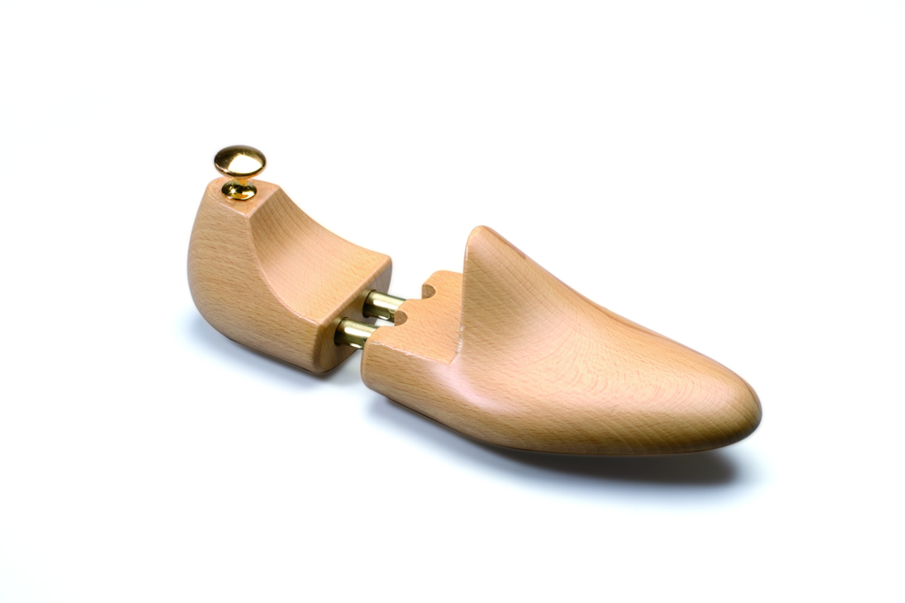
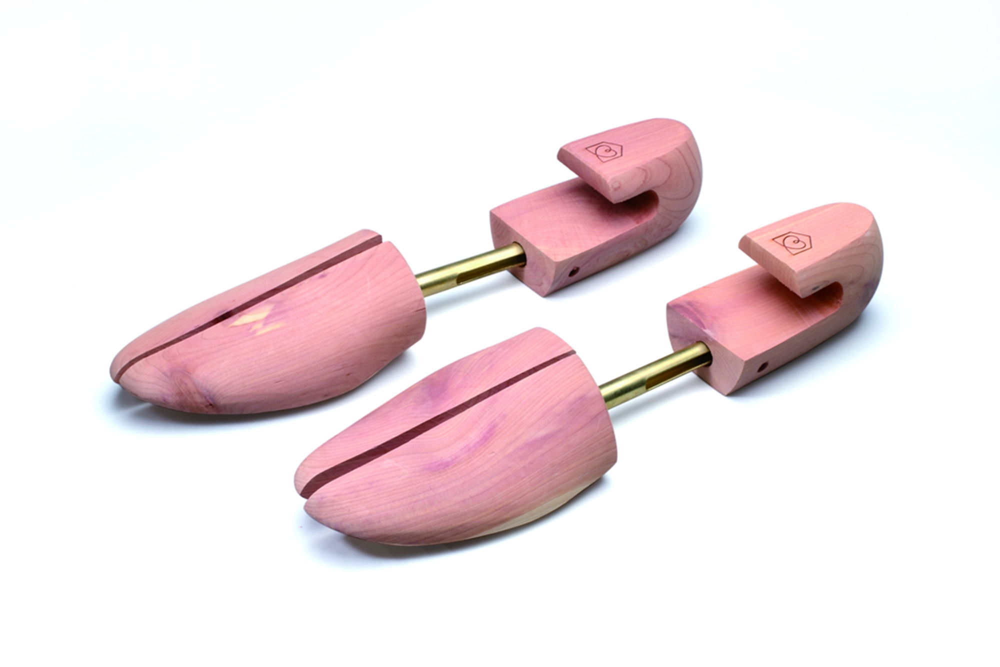

Shoe pads Company Haim If you decide to buy a good and cheap shoes, you should think about buying special pads, which are sometimes called spacers and mold holders. The English use the simple, but somewhat vague term shoe trees, which in literal translation means "wooden shoes". It may seem surprising, but the shoe pads are very different - and so I decided to write a great article, such a review of these varieties. Once again just in case, I stress that it's about accessories, and not about those shoes on which the shoes are sewn.
Wooden spacers
This option is better than the plastic spacers, but worse than full-fledged wooden pads.
The tree absorbs moisture, destroys unpleasant odors, and it's good.
But the disadvantage of the spacers remains; it was described above.
Of course, you can simply shovel the struts into the shoes, not tucking in their end,
but then the folds and creases will not straighten; however, in general,
the shoes will be nice - thanks to the already described properties of the tree.
form holder1
form holder2

form holder3
form holder4

form holder5